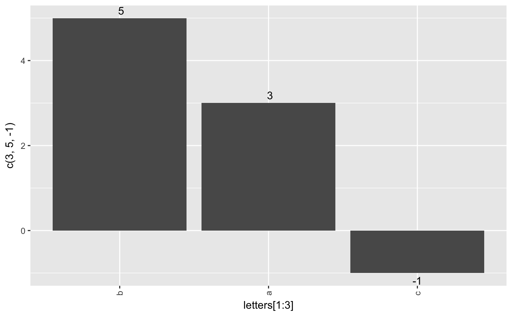
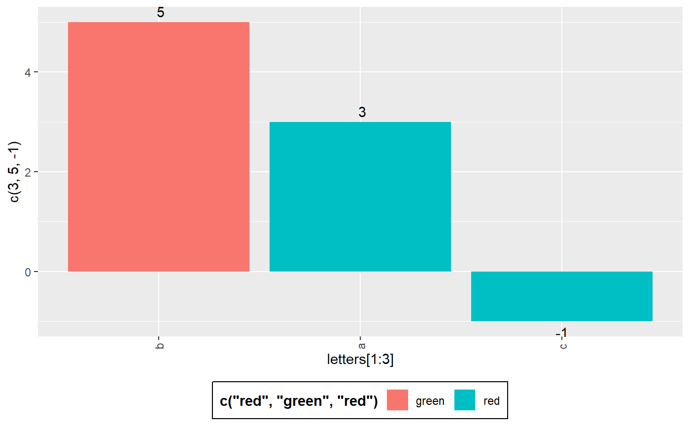
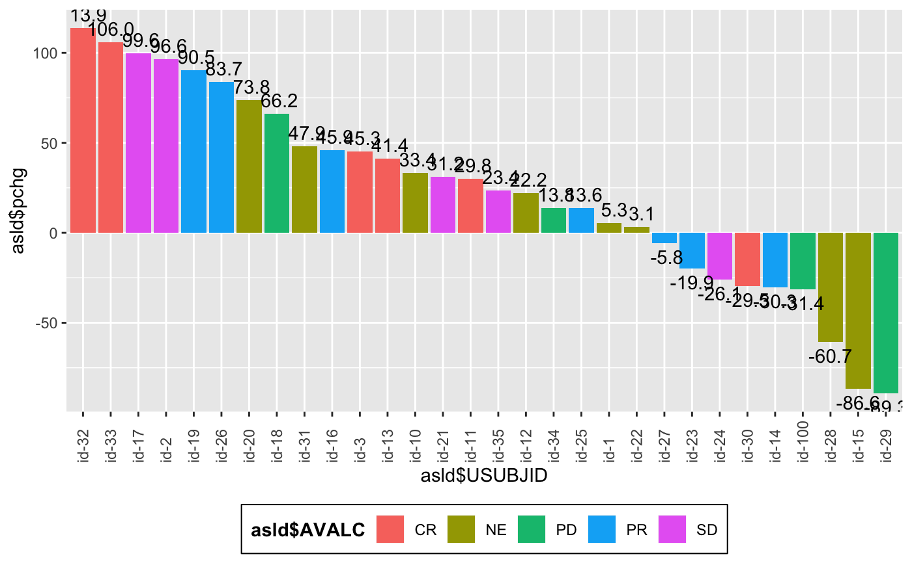
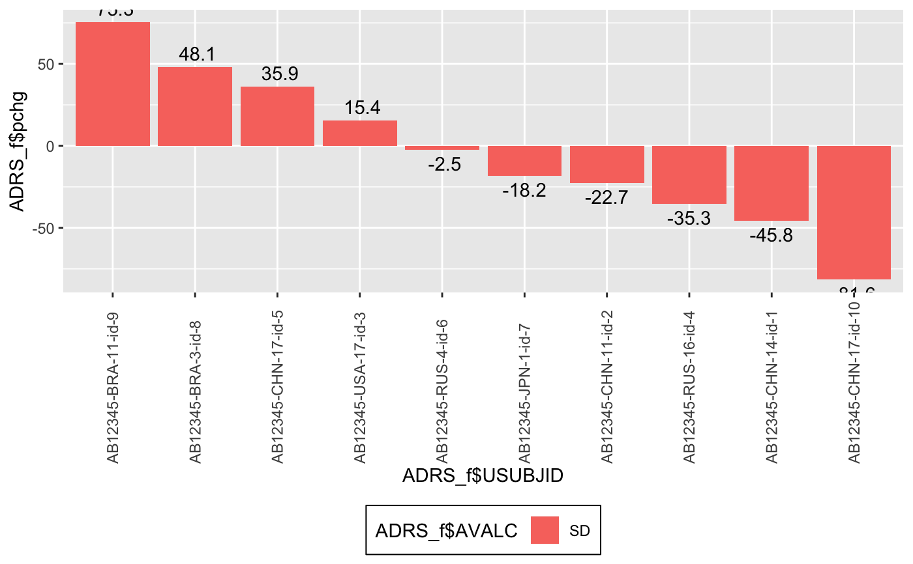
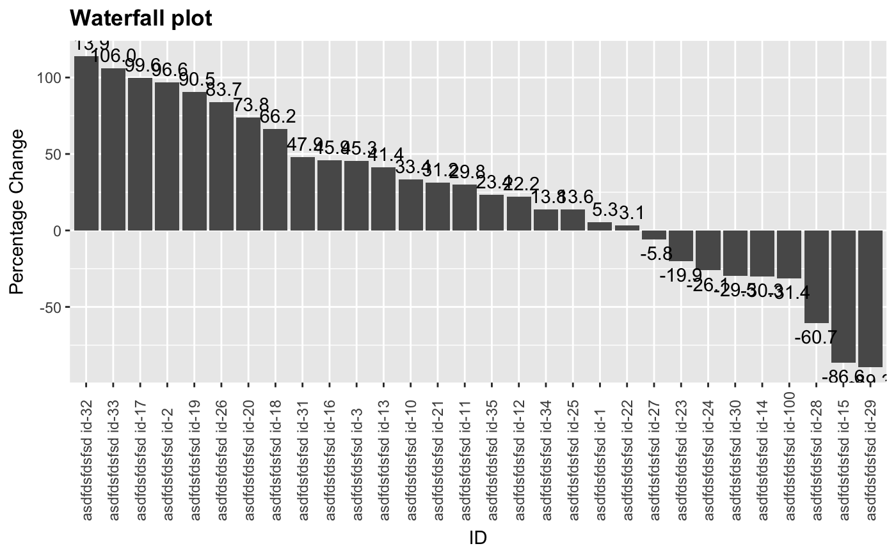
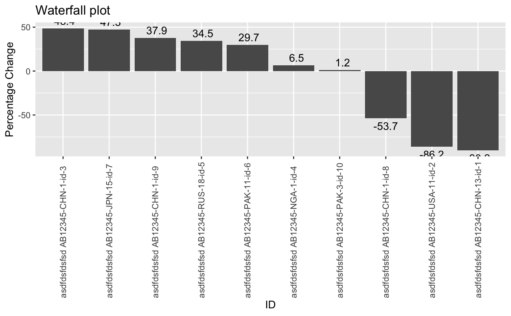

g_waterfall.RdThis basic waterfall plot visualizes a quantity height ordered by value with some
markup
g_waterfall(height, id, col = NULL, xlab = NULL, ylab = NULL, col.legend.title = NULL, title = NULL)
| height | numeric vector to be plotted as the waterfall bars |
|---|---|
| id | vector of IDs used as the x-axis label for the waterall bars |
| col | vector of a categorical variable for bar coloring |
| xlab | x label. Default is |
| ylab | y label. Default is |
| col.legend.title | A string to be displayed as legend title. |
| title | A string to be displayed as plot title. |
library(random.cdisc.data) library(dplyr) ADSL <- radsl(seed = 1) ADSL_f <- ADSL %>% select(USUBJID, STUDYID, ARM, ARMCD, SEX) ADRS <- radrs(ADSL, seed = 2) ADRS_f <- subset(ADRS, PARAMCD == "OVRINV") %>% mutate(pchg = rnorm(1200, 10, 50)) ADRS_f <- head(ADRS_f, 30) ADRS_f <- ADRS_f[!duplicated(ADRS_f$USUBJID),] head(ADRS_f)#> # A tibble: 6 x 24 #> STUDYID USUBJID SUBJID SITEID AGE SEX RACE COUNTRY ARM ARMCD ACTARM #> <chr> <chr> <chr> <chr> <dbl> <fct> <fct> <fct> <fct> <fct> <fct> #> 1 AB12345 AB1234… id-1 CHN-14 61 F ASIAN CHN C: C… ARM C C: Co… #> 2 AB12345 AB1234… id-2 CHN-11 77 F ASIAN CHN C: C… ARM C C: Co… #> 3 AB12345 AB1234… id-3 USA-17 27 F AMER… USA C: C… ARM C C: Co… #> 4 AB12345 AB1234… id-4 RUS-16 32 M WHITE RUS B: P… ARM B B: Pl… #> 5 AB12345 AB1234… id-5 CHN-17 31 M ASIAN CHN A: D… ARM A A: Dr… #> 6 AB12345 AB1234… id-6 RUS-4 32 F ASIAN RUS A: D… ARM A A: Dr… #> # … with 13 more variables: ACTARMCD <fct>, STRATA1 <fct>, STRATA2 <fct>, #> # BMRKR1 <dbl>, BMRKR2 <fct>, ITTFL <chr>, BEP01FL <fct>, PARAM <chr>, #> # PARAMCD <chr>, AVAL <int>, AVALC <fct>, AVISIT <fct>, pchg <dbl>g_waterfall( height = ADRS_f$pchg, id = ADRS_f$USUBJID, col = ADRS_f$AVALC )g_waterfall( height = ADRS_f$pchg, id = ADRS_f$USUBJID, col = ADRS_f$AVALC )g_waterfall( height = ADRS_f$pchg, id = paste("asdfdsfdsfsd",ADRS_f$USUBJID), xlab = "ID", ylab = "Percentage Change", title = "Waterfall plot" )